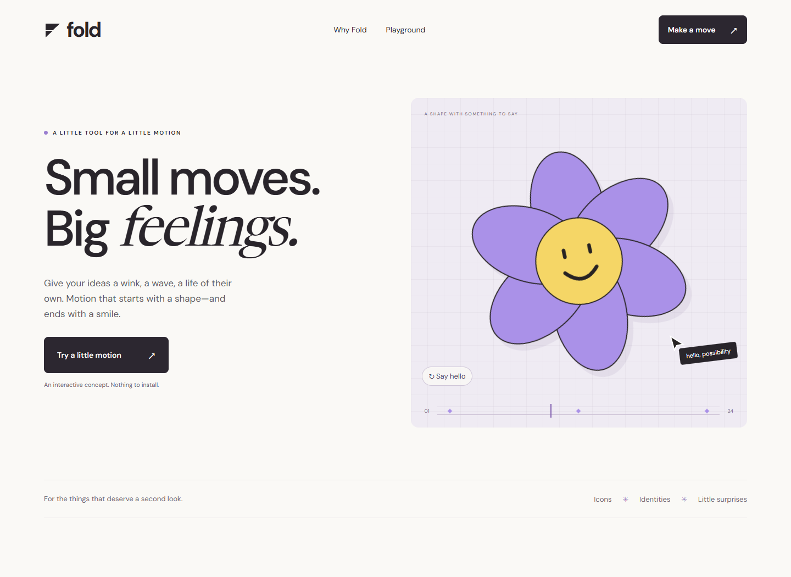
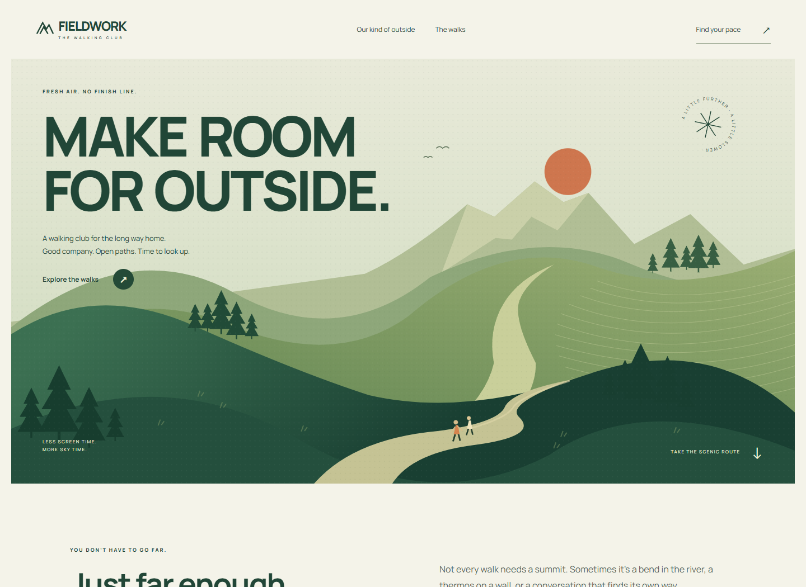

Different worlds.
Considered details.
A playful motion tool. An unhurried walking club. Two landing pages with their own ideas, illustrations, and ways to explore.

Fold
A little tool for a little motion.

Fieldwork
Fresh air. No finish line.